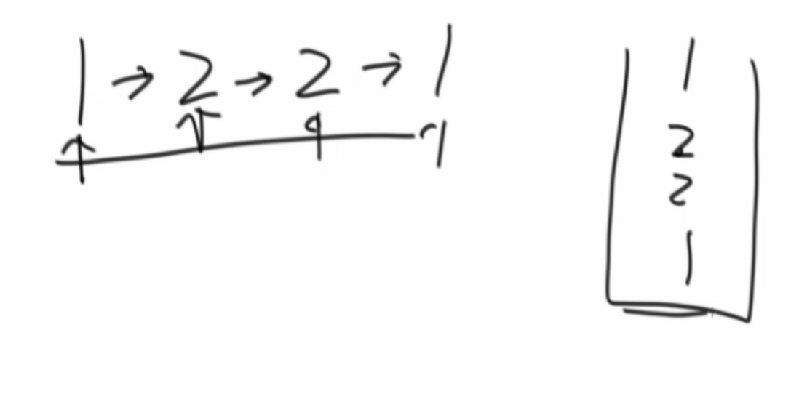
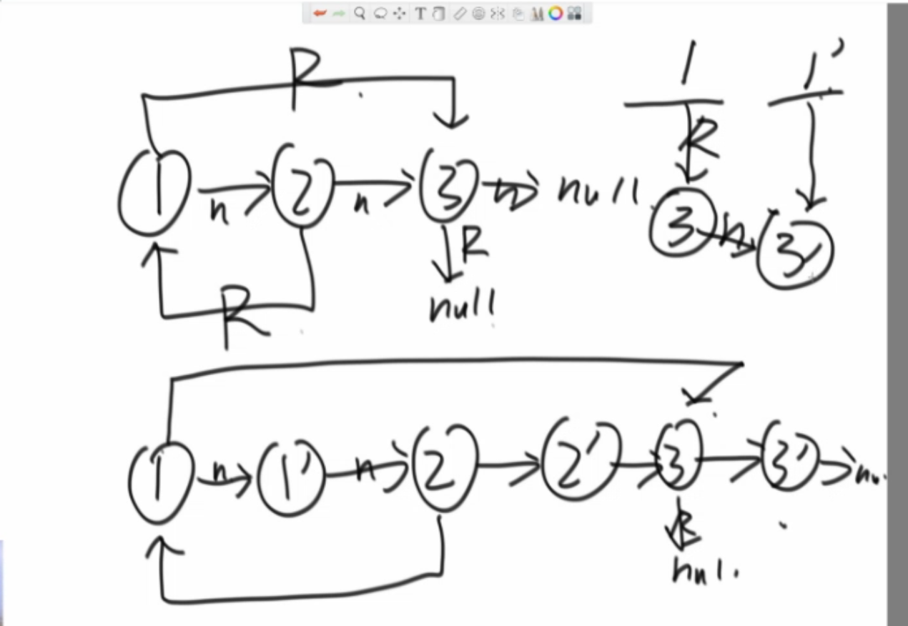
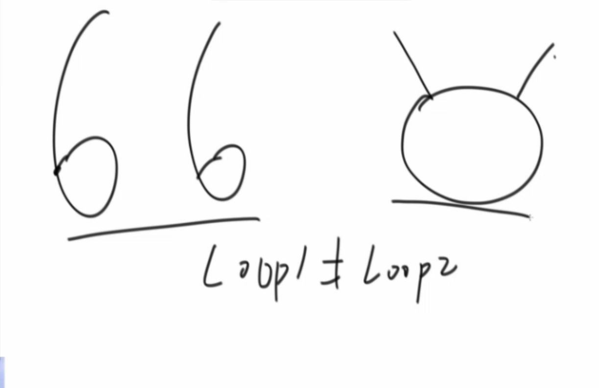

左程云算法初级班3_栈和队列，链表
例题1
用数组实现栈
1 | public static class ArrayStack { |
例题2
用数组实现队列
1 | public static class ArrayQueue { |
注意用到了三个变量
例题3
实现一个特殊的栈，在实现栈的基本功能的基础上，再实现返回栈中最小元素的操作。
【要求】
1．pop、push、getMin操作的时间复杂度都是O(1)。
2．设计的栈类型可以使用现成的栈结构。

1 | public static class MyStack2 { |
还可以省点空间，注意当前数等于min栈栈顶时，要压入。弹出时，相等要弹出。

1 | public static class MyStack1 { |
例题4
队列实现栈，应用：DFS用队列实现（队列用栈实现）
1 | public static class TwoQueuesStack { |
例题5
栈实现队列
原则：
栈2为空才能从栈1转移数据
转移时，全部转移完
1 | public static class TwoStacksQueue { |
例题6
猫狗队列
要求：
- 实现一种狗猫队列的结构，要求如下：
- 用户可以调用add方法将cat类或dog类的实例放入队列中；
- 用户可以调用pollAll方法，将队列中所有的实例按照进队列的先后顺序依次弹出；
- 用户可以调用pollDog方法，将队列中dog类的实例按照进队列的先后顺序依次弹出；
- 用户可以调用pollCat方法，将队列中cat类的实例按照进队列的先后顺序依次弹出；
- 用户可以调用isEmpty方法，检查队列中是否还有dog或cat的实例；
- 用户可以调用isDogEmpty方法，检查队列中是否有dog类的实例；
- 用户可以调用isCatEmpty方法，检查队列中是否有cat类的实例。
思路：
- 用两个队列，分别装猫和装狗
- 每个猫/狗对象再封装一个值，记录顺序
1 | public static class DogCatQueue { |
例题7
设计RandomPool结构
【题目】
设计一种结构，在该结构中有如下三个功能：
insert(key)：将某个key加入到该结构，做到不重复加入。
delete(key)：将原本在结构中的某个key移除。
getRandom()：等概率随机返回结构中的任何一个key。
【要求】
Insert、delete和getRandom方法的时间复杂度都是$O(1)$。
难点在于，delete相应元素后getRandom是$O(1)$的。
思路：用一个变量统计哈希表里数据总数。并在删除一个元素时，把它与最后一个元素交换，再进行删除。
1 | public static class Pool<K> { |
例题8
转圈打印矩阵
1 | public static void spiralOrderPrint(int[][] matrix) { |
这个方法牛逼啊，不用判断是否越界。。。
例题9
之字形打印

1 | public static void printMatrixZigZag(int[][] matrix) { |
例题10
在行列都排好序的矩阵中找数
【题目】
给定一个有NM的整型矩阵matrix和一个整数K，matrix的每一行和每一
列都是排好序的。实现一个函数，判断K是否在matrix中。
例如：
0 1 2 5
2 3 4 7
4 4 4 8
5 7 7 9
如果K为7，返回true；如果K为6，返回false。
*【要求】
时间复杂度为O(N+M)，额外空间复杂度为O(1)。
1 | public static boolean isContains(int[][] matrix, int K) { |
例题11
打印两个有序链表的公共部分
**
给定两个有序链表的头指针head1和head2，打印两个链表的公共部分。
1 | public static void printCommonPart(Node head1, Node head2) { |
例题12
判断一个链表是否为回文结构
【题目】
给定一个链表的头节点head，请判断该链表是否为回文结构。
例如：
1->2->1，返回true。
1->2->2->1，返回true。
15->6->15，返回true。
1->2->3，返回false。
【注】如果链表长度为N，时间复杂度达到O(N)，额外空间复杂度达到O(1)。
- 不限制空间复杂度时可用栈实现

限制空间复杂度时，快慢指针找中点，翻转链表后一一对比。
1
2
3
4
5
6
7
8
9
10
11
12
13
14
15
16
17
18
19
20
21
22
23
24
25
26
27
28
29
30
31
32
33
34
35
36
37
38
39
40public static boolean isPalindrome3(Node head) {
if (head == null || head.next == null) {
return true;
}
Node n1 = head;
Node n2 = head;
while (n2.next != null && n2.next.next != null) { // find mid node
n1 = n1.next; // n1 -> mid
n2 = n2.next.next; // n2 -> end
}
n2 = n1.next; // n2 -> right part first node
n1.next = null; // mid.next -> null
Node n3 = null;
while (n2 != null) { // right part convert
n3 = n2.next; // n3 -> save next node
n2.next = n1; // next of right node convert
n1 = n2; // n1 move
n2 = n3; // n2 move
}
n3 = n1; // n3 -> save last node
n2 = head;// n2 -> left first node
boolean res = true;
while (n1 != null && n2 != null) { // check palindrome
if (n1.value != n2.value) {
res = false;
break;
}
n1 = n1.next; // left to mid
n2 = n2.next; // right to mid
}
n1 = n3.next;
n3.next = null;
while (n1 != null) { // recover list
n2 = n1.next;
n1.next = n3;
n3 = n1;
n1 = n2;
}
return res;
}例题13
将单向链表按某值划分成左边小、中间相等、右边大的形式
1
2
3
4
5
6
7
8
9
10
11
12
13
14
15
16
17
18
19
20
21
22
23
24
25
26
27
28
29
30
31
32
33
34
35
36
37
38
39
40
41
42
43
44
45
46
47
48
49
50public static Node listPartition2(Node head, int pivot) {
Node sH = null; // small head
Node sT = null; // small tail
Node eH = null; // equal head
Node eT = null; // equal tail
Node bH = null; // big head
Node bT = null; // big tail
Node next = null; // save next node
// every node distributed to three lists
while (head != null) {
next = head.next;
head.next = null;
if (head.value < pivot) {
if (sH == null) {
sH = head;
sT = head;
} else {
sT.next = head;
sT = head;
}
} else if (head.value == pivot) {
if (eH == null) {
eH = head;
eT = head;
} else {
eT.next = head;
eT = head;
}
} else {
if (bH == null) {
bH = head;
bT = head;
} else {
bT.next = head;
bT = head;
}
}
head = next;
}
// small and equal reconnect
if (sT != null) {
sT.next = eH;
eT = eT == null ? sT : eT;
}
// all reconnect
if (eT != null) {
eT.next = bH;
}
return sH != null ? sH : eH != null ? eH : bH;
}主要考察边界的处理能力
例题14
复制含有随机指针节点的链表
一种特殊的链表节点类描述如下：1
2
3
4
5
6
7
8public class Node {
public int value;
public Node next;
public Node rand;
public Node(int data) {
this.value = data;
}
}思路1：哈希表
1
2
3
4
5
6
7
8
9
10
11
12
13
14
15public static Node copyListWithRand1(Node head) {
HashMap<Node, Node> map = new HashMap<Node, Node>();
Node cur = head;
while (cur != null) {
map.put(cur, new Node(cur.value));
cur = cur.next;
}
cur = head;
while (cur != null) {
map.get(cur).next = map.get(cur.next);
map.get(cur).rand = map.get(cur.rand);
cur = cur.next;
}
return map.get(head);
}思路2：难点在于random指针的寻找
做一个大链表，能很好解决这个问题
最后进行链表分离即可

1 | public static Node copyListWithRand2(Node head) { |
例题15
两个单链表相交的一系列问题
【题目】
在本题中，单链表可能有环，也可能无环。给定两个单链表的头节点
head1和head2，这两个链表可能相交，也可能不相交。请实现一个函数，
如果两个链表相交，请返回相交的第一个节点；如果不相交，返回null
即可。
要求：如果链表1的长度为N，链表2的长度为M，时间复杂度请达到
O(N+M)，额外空间复杂度请达到O(1)。
思路：
一个有环，一个无环，不可能相交
两个都无环，很简单。。。
两个都有环，环入口分别记为loop1和loop2
有三种情况
- 不相交
- 在环外相交
此时loop1==loop2，用无环单链表判断是否相交的解答即可 - 在环上相交
当loop1!=loop2，要区分以下两种情况

loop1跑环一圈，通过看是否遍历到loop2结点即可区分。
方法总结：
1 | public static Node getIntersectNode(Node head1, Node head2) { |
例题16
反转单向和双向链表
【题目】
分别实现反转单向链表和反转双向链表的函数。
【要求】
如果链表长度为N，时间复杂度要求为O(N)，额外空间复杂度要求为O(1)
1 | public static Node reverseList(Node head) { |